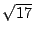

| PyHEP Tutorial |
| PyHEP Tutorial |
You may specify a particular bin of a histogram with a ``bin number'', which is a sequence of bin positions along successive axes. The length of the sequence is equal to the histogram's number of dimensions. Each item is the index of the bin along the corresponding axis.
Along each axis, the coordinate in the bin number ranges between zero
and one less than the number of bins on the axis. It may also take the
values "underflow" and "overflow", which denote the
underflow and overflow bins, respectively
For example, consider this histogram:
>>> histogram = hep.hist.Histogram((20, (-1.0, 1.0)), (24, (0, 24)))
(0, 0),
(9, 0), (0, 23), and (9, 23).
The bin whose number is (12, "underflow") is for any samples
whose first coordinate is between 0.2 and 0.3, and whose second
coordinate is less than 0. The bin whose number is
("underflow", "overflow") is for any sample whose first
coordinate is less than -1 and whose second coordinate is greater than
24.
To get the bin number corresponding to a sample point, use the map method, passing the sample coordinates.
Just as with sample coordinates, for a one-dimensional histogram you may specify either the bin number as a one-element sequence, or simply the bin number along the (only) axis.
To obtain the contents of a bin, use the getBin method, passing the bin number. To obtain the 68.2% confidence unterval on a bin, use the getError method, which returns two values specifying how far the interval extends below and above the central value.
For example,
>>> histogram = hep.hist.Histogram1D(10, (0.0, 1.0), error_model="gaussian") >>> histogram.accumulate(0.64, 17) >>> histogram.map(0.64) (6,) >>> histogram.getBin((6, )) 17 >>> histogram.getError((6, )) (4.1231056256176606, 4.1231056256176606)
"gaussian" error model, the errors on the bin are the
square root of the bin contents, here, =4.123106. Since the
histogram is one-dimensional, we just as easily could have used,
>>> histogram.getBin(6)
To set the contents of a bin, use the setBin method, specifying
the new value as the second argument. To set the error estimate on a
bin, use the setError method, specifying a '(lo, hi)'
pair for the size of the confidence interval as the second argument.
Note that you may only call the setError method of a histogram
with "asymmetric" or "symmetric" error model, and in the
latter case, the average of the lo and hi values you
specify is stored as the single symmetric error estimate.
To obtain the range of coordinate values spanned by a single bin, use
the getBinRange method, passing the bin number. The return
value is a sequence, each of whose items is a (lo, hi) pair of
coordinate values along on axis spanned by the bin. For example, to
print the bin range and value for bins in a one-dimensional histogram,
>>> for bin in range(histogram.axis.number_of_bins): ... (lo, hi), = histogram.getBinRange(bin) ... bin_value = histogram.getBin(bin) ... print "bin (%f,%f): %f" % (lo, hi, bin_value)
(lo, hi) of the bin's range along the histogram's axis.
A histogram's number_of_samples attribute contains the number
of times the accumualte method (or the « operator) was
invoked.
| PyHEP Tutorial |